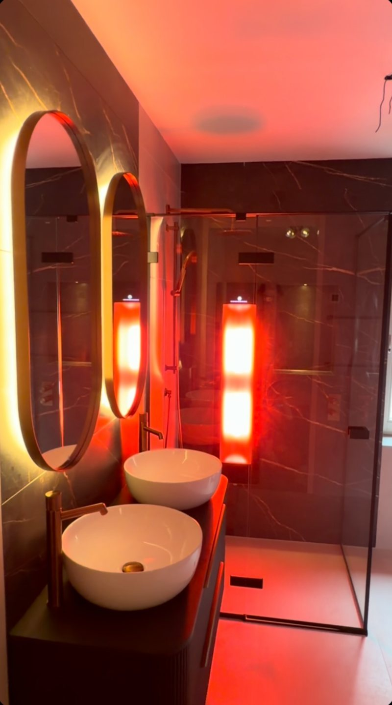
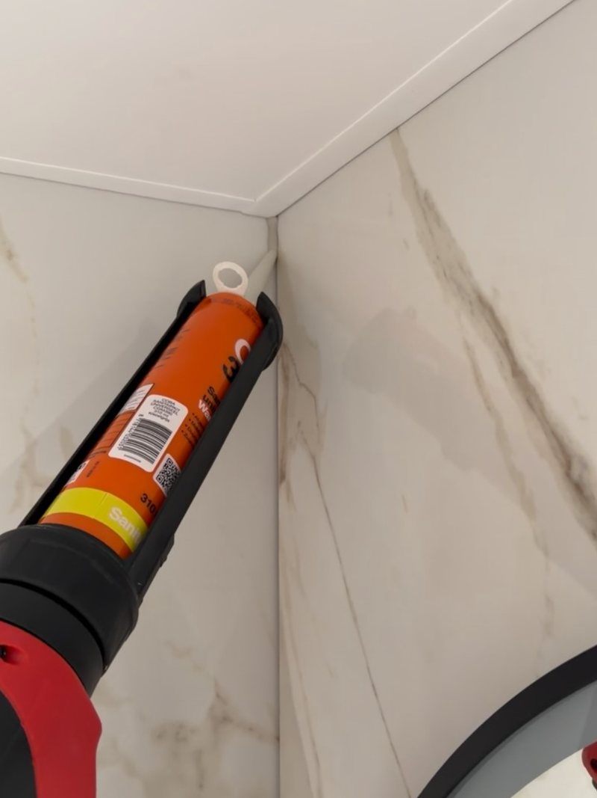
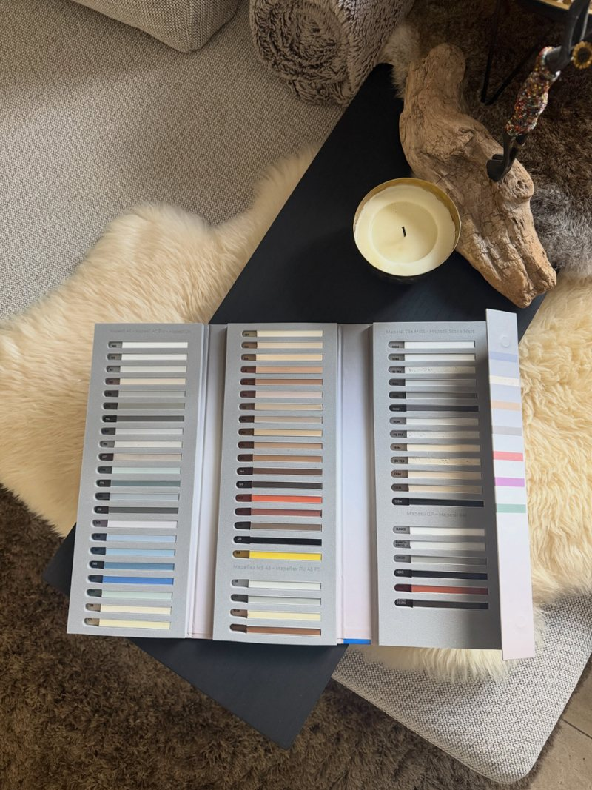
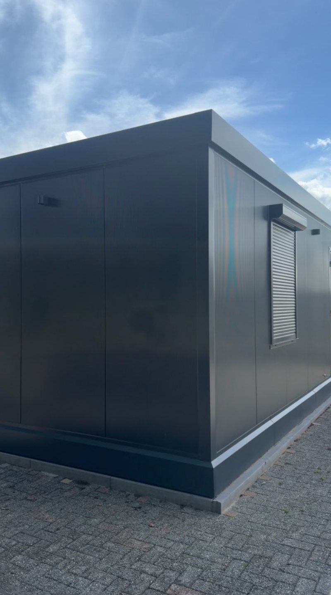

Strak kitwerk. Stevig laswerk.
Lambers Techniek zorgt voor perfect afgewerkte kitnaden in badkamer, toilet, keuken en op de vloer, en voor laswerk dat gekeurd en gecertificeerd wordt opgeleverd. Met oog voor detail, kwaliteit en duurzaamheid.
- Vrijblijvende offerte
- 63 kleuren kit
- Waterdichte afwerking

Nieuwe badkamer · afgewerkt met kitwerkEen nette kitrand maakt het verschil
Een strakke kitnaad ziet er niet alleen goed uit. Hij is waterdicht en beschermt tegen schimmel. Daarom is de afwerking het laatste, maar zeker niet het minste onderdeel van een nieuwe badkamer of keuken.
- Badkamer en toiletSanitairkit rond douche, bad, wastafel en tegelwerk.
- Keuken en vloerKitnaden in de keuken en langs vloeren, netjes en duurzaam.
- Nieuwbouw en woonunitsOok rolluiken, keukens en kozijnen worden strak afgekit.
- TrappenEen hoogwaardige trap verdient een hoogwaardige, waterdichte afwerking.


63 kleuren kit op voorraad
Zo stemmen we de kit perfect af op uw tegels of voegen, voor een strakke en verzorgde afwerking. Lambers Techniek blijft investeren in professioneel materiaal, zodat elk project efficiënt en met oog voor kwaliteit wordt uitgevoerd.
- Kleur passend bij tegels en voegen
- Professioneel materiaal
- Duurzaam en waterdicht resultaat
Laswerk dat gekeurd wordt opgeleverd
Naast kitwerk verzorgt Lambers Techniek laswerk. Een recent voorbeeld zijn de hijsframes die zijn opgeleverd en gereed voor inzet.
Hijsframes
Opgeleverd en gereed voor inzet. Na afronding onafhankelijk gekeurd en gecertificeerd voor 17.000 kg.
Vakmanschap en veiligheid
Bij laswerk komen precisie en veiligheid samen. Daar is geen ruimte voor half werk.
Maatwerk
Heeft u een lasklus of een project in gedachten? Stuur gerust een bericht, dan kijken we wat mogelijk is.
Recent werk
Een selectie uit het eigen Instagram-kanaal van Lambers Techniek, o.a. in Weert, Asten en Meijel.

In drie stappen een nette afwerking
- 1
Stuur een bericht
Mail of bel en vertel wat u nodig heeft: kitwerk, een lasklus of allebei.
- 2
Vrijblijvende offerte
U ontvangt een offerte op maat, zonder verplichtingen.
- 3
Strak uitgevoerd
Het werk wordt netjes afgewerkt, met oog voor detail en kwaliteit.
Vraag een vrijblijvende offerte aan
Mail of bel gerust. Foto's van de situatie helpen om snel te kunnen reageren.